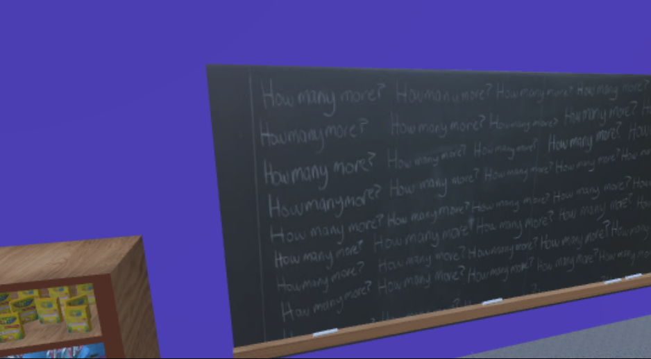
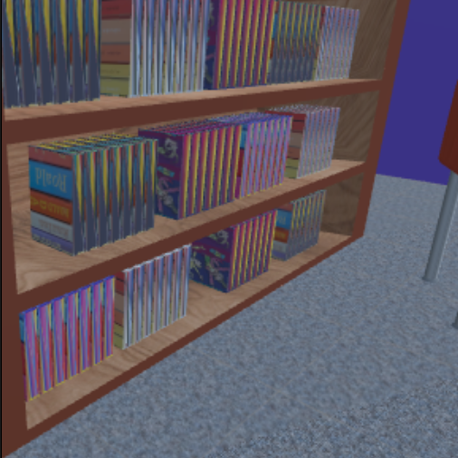
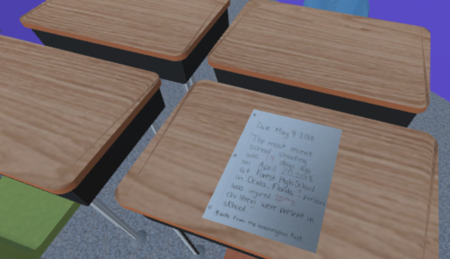
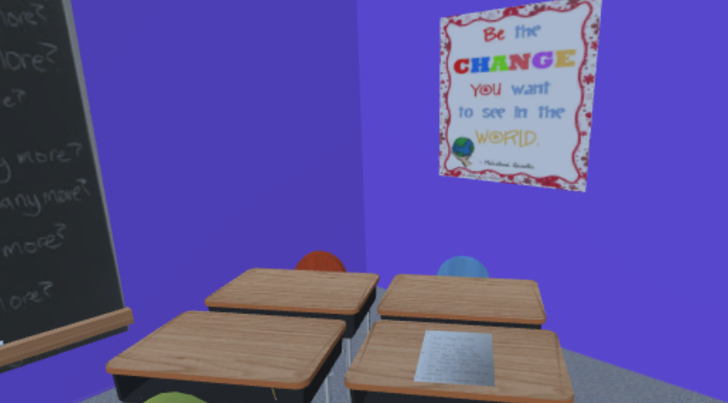

My Work
"How Many More?" PSA
These are screenshots from a VR experience of a classroom as a PSA for gun violence in American schools. Everything was 3D modelled in Maya and textured in Unity, screenshots are from Unity.





Palien Logo and Process
I created a design for a fictional company "Palien". This fictional company specializes in setting up pen pals from different planets. Design was done in Illustrator.
Process and Drafts: 4-7
Final: 8 & 9


Physical Application and Process
For my physical application I printed the design with a message and stamp on an envelope.


Interface for Bucketlist App
I designed the UI for a fictional Bucketlist app that would give a user a monthly bucketlist to complete.
Process and Drafts: 10-15
Final: 16-18


Four Days: A short film
Motion Graphics Fun
I created audio based off a soundscape I made and created 2D graphics to go along with it.